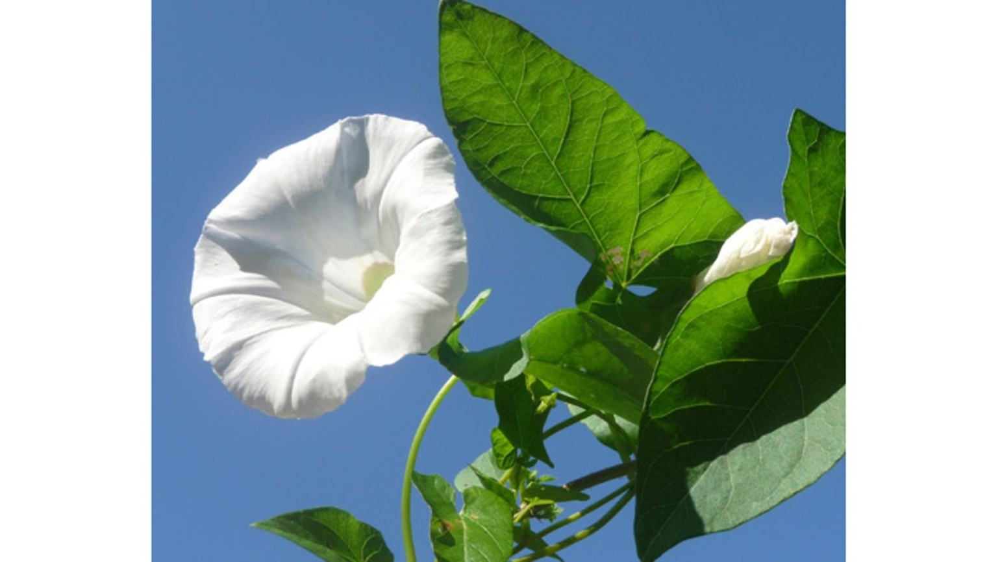
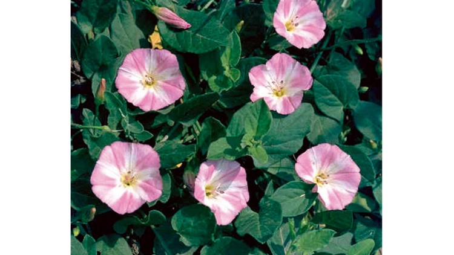
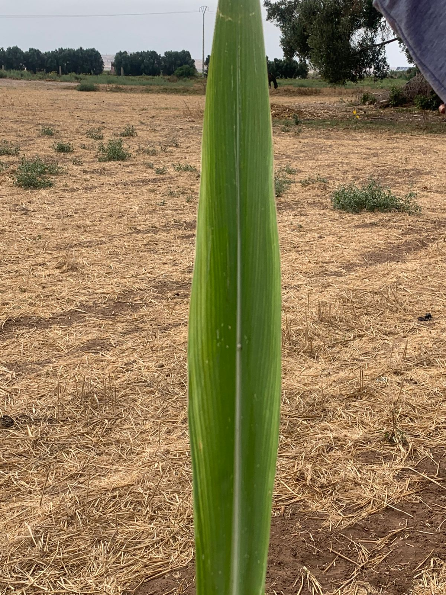
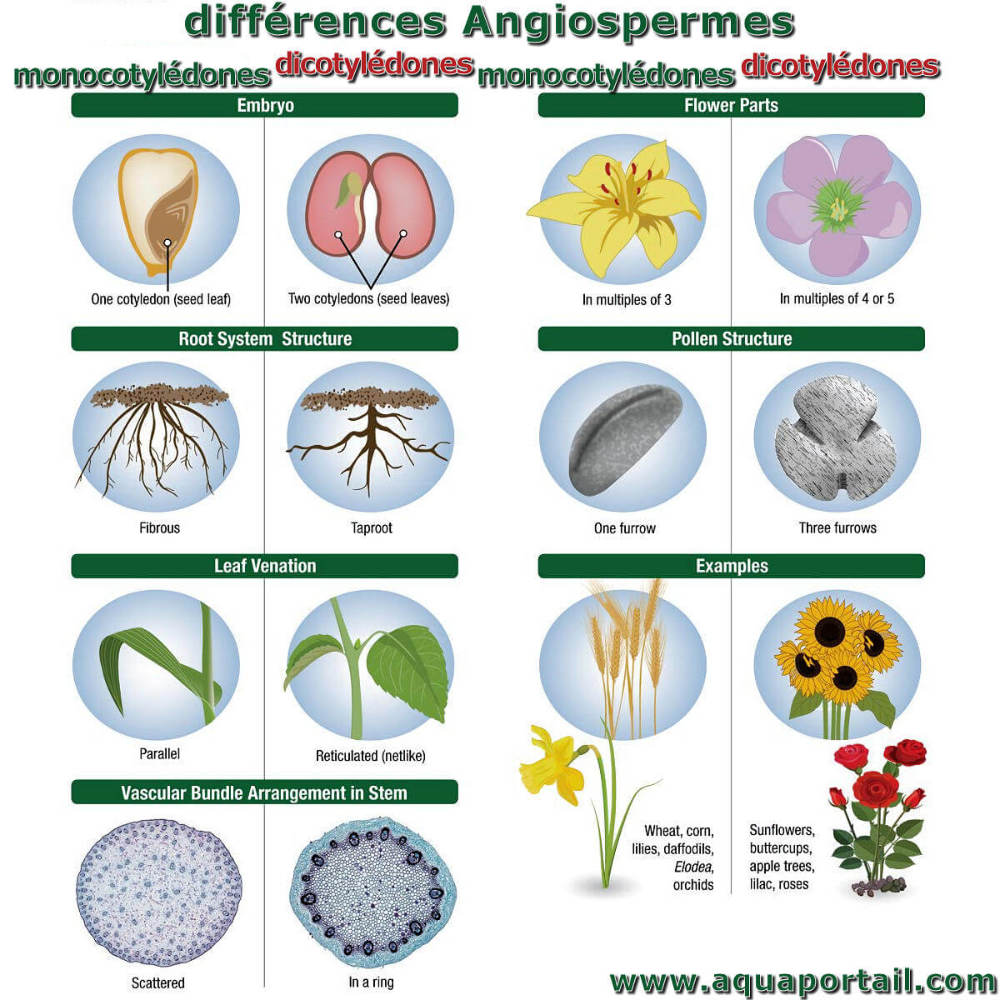
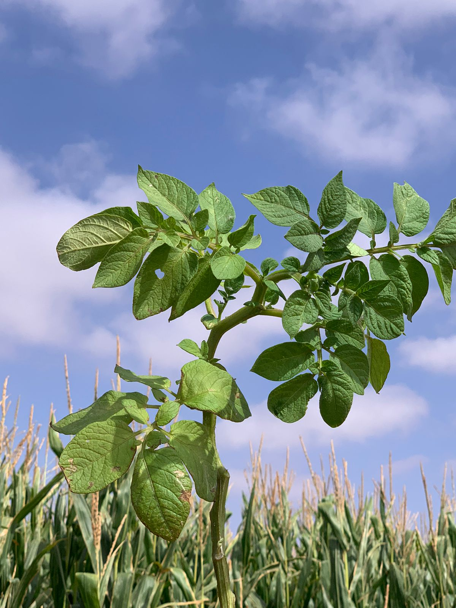
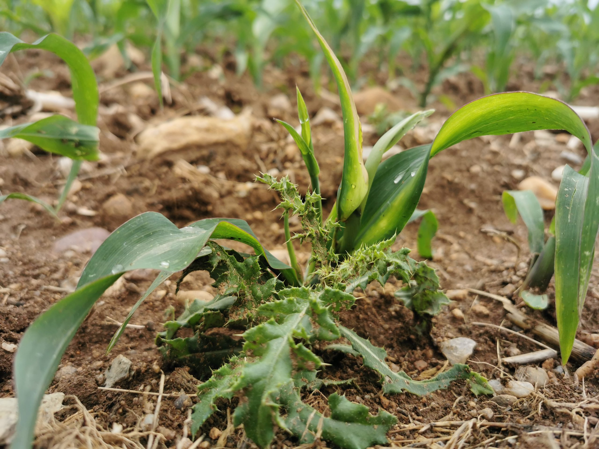

Dans notre site vous pouvez savoir les définitions des herbes monocotylédones et dicotylédones,et les différences entre eux, ainsi que les mauvaises herbes et les adventices.
Voici le menu, cliquer pour en savoir plus.
Les herbes monocotylédones
Les herbes monocotylédones sont des plantes à fleurs avec un seul cotylédon dans leurs graines.Elles ont des feuilles souvent étroites à nervures parallèles, des racines en faisceau, des fleurs avec des parties en multiples de trois, et des tiges sans croissance secondaire épaisse.
Les herbes dicotylédones

Les herbes dicotylédones sont des plantes à fleurs avec deux cotylédons dans leurs graines. Elles ont généralement des feuilles à nervation réticulée, des racines pivotantes, et leurs fleurs ont des pièces florales disposées en cycles de quatre ou cinq.
Les différences entre les herbes monocotylédones et dicotylédones
monocotylédones
Feuilles généralement longues et étroites avec des nervures parallèles (ex. herbe).
Croissance primaire avec peu ou pas de croissance secondaire
dicotylédones
Feuilles avec des nervures réticulées ou ramifiées (ex. pissenlit).
Croissance primaire et secondaire, permettant une plus grande épaisseur des tiges.

Dans ces images vous pouvez voir les différences entre les herbes monocotylédones et dicotylédones , entre les feuilles et les racines dont les monocotylédones ont un système racinaire fasciculé avec des faisceaux vasculaires dispersés, tandis que les dicotylédones ont un système racinaire pivotant avec une disposition régulière des faisceaux vasculaires. Ces différences sont des adaptations à leurs différents modes de vie et environnements.

Les mauvaises herbes
Les mauvaises herbes sont des plantes indésirables qui poussent là où elles ne sont pas souhaitées. Elles concurrencent les plantes cultivées pour les ressources, se propagent rapidement, s'adaptent bien aux conditions difficiles, et peuvent être difficiles à éliminer.
Les adventices
Les adventices sont des plantes qui poussent spontanément dans des cultures, des jardins ou des espaces verts sans y avoir été plantées intentionnellement. Elles sont souvent considérées comme des mauvaises herbes car elles peuvent entrer en compétition avec les plantes cultivées pour les ressources (lumière, eau, nutriments), réduisant ainsi le rendement des cultures et compliquant l'entretien des espaces verts.

Les différences entre les mauvaises herbes et les adventices
Les mauvaises herbes
Souvent utilisé dans un sens négatif, indiquant une nuisance pour les cultures.
Souvent ciblées pour être éliminées dans les pratiques agricoles

Les adventices
Terme plus neutre, englobant toutes les plantes spontanées, qu'elles soient nuisibles ou non.
Certaines peuvent être tolérées ou même bénéfiques pour la biodiversité.

.jpg)
.jpg)
.jpg)
.jpg)